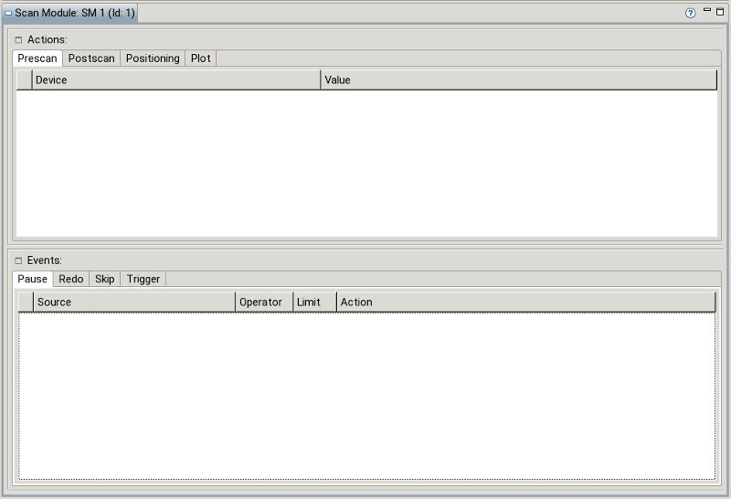

The content of the ScanModuleView depends on the type of the currently selected scan module. It shows attributes that can be altered and allows adding/deleting devices, actions, events, etc. in certain cases. The different appearances are shown in the following.
For a common (a.k.a. classic) scan module the Scan Module View looks as follows:

A scan module allows defining different types of events to pause execution, redo the last measurement, etc. More information about events is found here.
When a scan module of type „Axis Snapshot (static)” is selected, the view shows a table containing all axes contained in the snapshot. Axes can be added or removed.
When a scan module of type „Channel Snapshot (static)” is selected the view shows a table containing all channels contained in the snapshot. Channels can be added or removed.
Scan modules of type „Axis Snapshot (dynamic)” cannot be altered. Their contents is determined during scan execution. The view shows an immutable table showing all axes contained in the snapshot based on the currently loaded device definition.
Scan modules of type „Channel Snapshot (dynamic)” cannot be altered. Their contents is determined during scan execution. The view shows an immutable table showing all channels contained in the snapshot based on the currently loaded device definition.